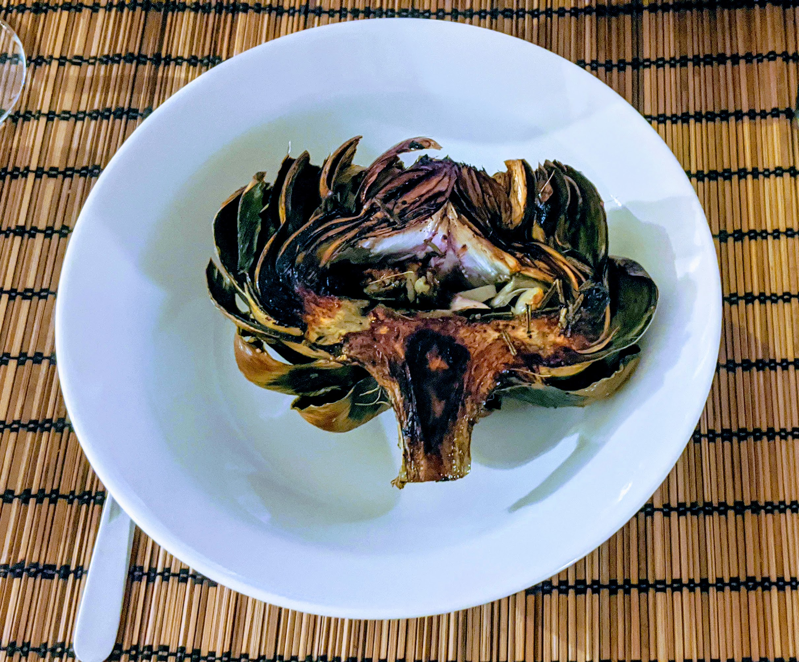

Artichauts rôtis

Pour 2 personnes :
- Deux petits artichauts, ou un gros
- Un citron
- Six gousses d'ail
- Un peu de romarin, frais de préférence
- Sel, poivre, huile d'olive
- Faire préchauffer le four à 205°C. Couper la base des artichauts, enlever les petites feuilles près de la base, et couper environ 2-3cm du haut. Les rincer vite fait.
- Les couper en deux sur la longueur, et enlever la touffe de poils à l'intérieur. Presser du jus de citron immédiatement, pour éviter que ça ne brunisse trop.
- Éplucher l'ail, le couper en gros morceaux (disons en demi-gousse), et le mettre dans la cavité des artichauts avec le romarin. Saler, poivrer, parsemer d'huile d'olive.
- Les retourner sur une plaque de four recouverte de papier alu avec une spatule (pour que la garniture reste à l'intérieur). Saler, poivrer, et parsemer d'huile d'olive de l'autre côté.
- Cuire 15 minutes, puis recouvrir de papier alu et cuire 30 minutes de plus. Cuire un peu plus longtemps (disons 20 minutes à découvert, puis 35-40 minutes) si l'artichaut est gros.
- Retourner les demi-artichauts et ajouter un peu de jus de citron à la sortie du four. Déguster avec, par exemple, de la mayonnaise.
Retour à la liste des recettes